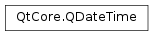

QDateTime¶
Synopsis¶
Functions¶
- def
__eq__(other) - def
__ge__(other) - def
__gt__(other) - def
__le__(other) - def
__lt__(other) - def
__ne__(other) - def
__reduce__() - def
__repr__() - def
addDays(days) - def
addMSecs(msecs) - def
addMonths(months) - def
addSecs(secs) - def
addYears(years) - def
date() - def
daysTo(arg__1) - def
isDaylightTime() - def
isNull() - def
isValid() - def
msecsTo(arg__1) - def
offsetFromUtc() - def
secsTo(arg__1) - def
setDate(date) - def
setMSecsSinceEpoch(msecs) - def
setOffsetFromUtc(offsetSeconds) - def
setSecsSinceEpoch(secs) - def
setTime(time) - def
setTimeSpec(spec) - def
setTimeZone(toZone) - def
setTime_t(secsSince1Jan1970UTC) - def
setUtcOffset(seconds) - def
swap(other) - def
time() - def
timeSpec() - def
timeZone() - def
timeZoneAbbreviation() - def
toLocalTime() - def
toMSecsSinceEpoch() - def
toOffsetFromUtc(offsetSeconds) - def
toPython() - def
toSecsSinceEpoch() - def
toString([f=Qt.TextDate]) - def
toString(format) - def
toTimeSpec(spec) - def
toTimeZone(toZone) - def
toTime_t() - def
toUTC() - def
utcOffset()
Static functions¶
- def
currentDateTime() - def
currentDateTimeUtc() - def
currentMSecsSinceEpoch() - def
currentSecsSinceEpoch() - def
fromMSecsSinceEpoch(msecs) - def
fromMSecsSinceEpoch(msecs, spec[, offsetFromUtc=0]) - def
fromMSecsSinceEpoch(msecs, timeZone) - def
fromSecsSinceEpoch(secs, timeZone) - def
fromSecsSinceEpoch(secs[, spe=Qt.LocalTime[, offsetFromUtc=0]]) - def
fromString(s, format) - def
fromString(s[, f=Qt.TextDate]) - def
fromTime_t(secsSince1Jan1970UTC) - def
fromTime_t(secsSince1Jan1970UTC, spec[, offsetFromUtc=0]) - def
fromTime_t(secsSince1Jan1970UTC, timeZone)
Detailed Description¶
The
PySide2.QtCore.QDateTimeclass provides date and time functions.A
PySide2.QtCore.QDateTimeobject contains a calendar date and a clock time (a “datetime”). It is a combination of thePySide2.QtCore.QDateandPySide2.QtCore.QTimeclasses. It can read the current datetime from the system clock. It provides functions for comparing datetimes and for manipulating a datetime by adding a number of seconds, days, months, or years.A
PySide2.QtCore.QDateTimeobject is typically created either by giving a date and time explicitly in the constructor, or by using the static functionPySide2.QtCore.QDateTime.currentDateTime()that returns aPySide2.QtCore.QDateTimeobject set to the system clock’s time. The date and time can be changed withPySide2.QtCore.QDateTime.setDate()andPySide2.QtCore.QDateTime.setTime(). A datetime can also be set using thePySide2.QtCore.QDateTime.setTime_t()function that takes a POSIX-standard “number of seconds since 00:00:00 on January 1, 1970” value. ThePySide2.QtCore.QDateTime.fromString()function returns aPySide2.QtCore.QDateTime, given a string and a date format used to interpret the date within the string.The
PySide2.QtCore.QDateTime.date()andPySide2.QtCore.QDateTime.time()functions provide access to the date and time parts of the datetime. The same information is provided in textual format by thePySide2.QtCore.QDateTime.toString()function.
PySide2.QtCore.QDateTimeprovides a full set of operators to compare twoPySide2.QtCore.QDateTimeobjects, where smaller means earlier and larger means later.You can increment (or decrement) a datetime by a given number of milliseconds using
PySide2.QtCore.QDateTime.addMSecs(), seconds usingPySide2.QtCore.QDateTime.addSecs(), or days usingPySide2.QtCore.QDateTime.addDays(). Similarly, you can usePySide2.QtCore.QDateTime.addMonths()andPySide2.QtCore.QDateTime.addYears(). ThePySide2.QtCore.QDateTime.daysTo()function returns the number of days between two datetimes,PySide2.QtCore.QDateTime.secsTo()returns the number of seconds between two datetimes, andPySide2.QtCore.QDateTime.msecsTo()returns the number of milliseconds between two datetimes.
PySide2.QtCore.QDateTimecan store datetimes aslocal timeor asUTC.QDateTime.currentDateTime()returns aPySide2.QtCore.QDateTimeexpressed as local time; usePySide2.QtCore.QDateTime.toUTC()to convert it to UTC. You can also usePySide2.QtCore.QDateTime.timeSpec()to find out if aPySide2.QtCore.QDateTimeobject stores a UTC time or a local time. Operations such asPySide2.QtCore.QDateTime.addSecs()andPySide2.QtCore.QDateTime.secsTo()are aware of daylight-saving time (DST).Note
PySide2.QtCore.QDateTimedoes not account for leap seconds.
Remarks¶
No Year 0¶
There is no year 0. Dates in that year are considered invalid. The year -1 is the year “1 before Christ” or “1 before current era.” The day before 1 January 1 CE is 31 December 1 BCE.
Range of Valid Dates¶
The range of valid values able to be stored inPySide2.QtCore.QDateTimeis dependent on the internal storage implementation.PySide2.QtCore.QDateTimeis currently stored in a qint64 as a serial msecs value encoding the date and time. This restricts the date range to about +/- 292 million years, compared to thePySide2.QtCore.QDaterange of +/- 2 billion years. Care must be taken when creating aPySide2.QtCore.QDateTimewith extreme values that you do not overflow the storage. The exact range of supported values varies depending on theQt.TimeSpecand time zone.
Use of System Timezone¶
PySide2.QtCore.QDateTimeuses the system’s time zone information to determine the offset of local time from UTC. If the system is not configured correctly or not up-to-date,PySide2.QtCore.QDateTimewill give wrong results as well.
Daylight-Saving Time (DST)¶
PySide2.QtCore.QDateTimetakes into account the system’s time zone information when dealing with DST. On modern Unix systems, this means it applies the correct historical DST data whenever possible. On Windows, where the system doesn’t support historical DST data, historical accuracy is not maintained with respect to DST.The range of valid dates taking DST into account is 1970-01-01 to the present, and rules are in place for handling DST correctly until 2037-12-31, but these could change. For dates falling outside that range,
PySide2.QtCore.QDateTimemakes a best guess using the rules for year 1970 or 2037, but we can’t guarantee accuracy. This meansPySide2.QtCore.QDateTimedoesn’t take into account changes in a locale’s time zone before 1970, even if the system’s time zone database supports that information.
PySide2.QtCore.QDateTimetakes into consideration the Standard Time to Daylight-Saving Time transition. For example if the transition is at 2am and the clock goes forward to 3am, then there is a “missing” hour from 02:00:00 to 02:59:59.999 whichPySide2.QtCore.QDateTimeconsiders to be invalid. Any date maths performed will take this missing hour into account and return a valid result.
Offset From UTC¶
A
Qt.TimeSpecofQt.OffsetFromUTCis also supported. This allows you to define aPySide2.QtCore.QDateTimerelative to UTC at a fixed offset of a given number of seconds from UTC. For example, an offset of +3600 seconds is one hour ahead of UTC and is usually written in ISO standard notation as “UTC+01:00”. Daylight-Saving Time never applies with this TimeSpec.There is no explicit size restriction to the offset seconds, but there is an implicit limit imposed when using the
PySide2.QtCore.QDateTime.toString()andPySide2.QtCore.QDateTime.fromString()methods which use a format of [+|-]hh:mm, effectively limiting the range to +/- 99 hours and 59 minutes and whole minutes only. Note that currently no time zone lies outside the range of +/- 14 hours.
Time Zone Support¶
A
Qt.TimeSpecofQt.TimeZoneis also supported in conjunction with thePySide2.QtCore.QTimeZoneclass. This allows you to define a datetime in a named time zone adhering to a consistent set of daylight-saving transition rules. For example a time zone of “Europe/Berlin” will apply the daylight-saving rules as used in Germany since 1970. Note that the transition rules applied depend on the platform support. See thePySide2.QtCore.QTimeZonedocumentation for more details.
-
class
PySide2.QtCore.QDateTime¶ -
class
PySide2.QtCore.QDateTime(arg__1) -
class
PySide2.QtCore.QDateTime(arg__1, arg__2[, spec=Qt.LocalTime]) -
class
PySide2.QtCore.QDateTime(date, time, spec, offsetSeconds) -
class
PySide2.QtCore.QDateTime(date, time, timeZone) -
class
PySide2.QtCore.QDateTime(other) -
class
PySide2.QtCore.QDateTime(arg__1, arg__2, arg__3, arg__4, arg__5, arg__6) -
class
PySide2.QtCore.QDateTime(arg__1, arg__2, arg__3, arg__4, arg__5, arg__6, arg__7[, arg__8=Qt.LocalTime]) Parameters: - offsetSeconds –
PySide2.QtCore.int - date –
PySide2.QtCore.QDate - arg__8 –
PySide2.QtCore.int - spec –
PySide2.QtCore.Qt.TimeSpec - arg__2 –
PySide2.QtCore.QTime - other –
PySide2.QtCore.QDateTime - arg__5 –
PySide2.QtCore.int - arg__7 –
PySide2.QtCore.int - arg__1 –
PySide2.QtCore.QDate - arg__3 –
PySide2.QtCore.int - time –
PySide2.QtCore.QTime - timeZone –
PySide2.QtCore.QTimeZone - arg__4 –
PySide2.QtCore.int - arg__6 –
PySide2.QtCore.int
Constructs a null datetime (i.e. null date and null time). A null datetime is invalid, since the date is invalid.
See also
Constructs a datetime with the given
date, a valid time(00:00:00.000), and sets thePySide2.QtCore.QDateTime.timeSpec()toQt.LocalTime.Constructs a datetime with the given
dateandtime, using the time specification defined byspec.If
dateis valid andtimeis not, the time will be set to midnight.If
specisQt.OffsetFromUTCthen it will be set toQt.UTC, i.e. an offset of 0 seconds. To create aQt.OffsetFromUTCdatetime use the correct constructor.If
specisQt.TimeZonethen the spec will be set toQt.LocalTime, i.e. the current system time zone. To create aQt.TimeZonedatetime use the correct constructor.Constructs a datetime with the given
dateandtime, using the time specification defined byspecandoffsetSecondsseconds.If
dateis valid andtimeis not, the time will be set to midnight.If the
specis notQt.OffsetFromUTCthenoffsetSecondswill be ignored.If the
specisQt.OffsetFromUTCandoffsetSecondsis 0 then thePySide2.QtCore.QDateTime.timeSpec()will be set toQt.UTC, i.e. an offset of 0 seconds.If
specisQt.TimeZonethen the spec will be set toQt.LocalTime, i.e. the current system time zone. To create aQt.TimeZonedatetime use the correct constructor.Constructs a datetime with the given
dateandtime, using the Time Zone specified bytimeZone.If
dateis valid andtimeis not, the time will be set to 00:00:00.If
timeZoneis invalid then the datetime will be invalid.Constructs a copy of the
otherdatetime.- offsetSeconds –
-
PySide2.QtCore.QDateTime.__reduce__()¶ Return type: PyObject
-
PySide2.QtCore.QDateTime.__repr__()¶ Return type: PyObject
-
PySide2.QtCore.QDateTime.addDays(days)¶ Parameters: days – PySide2.QtCore.qint64Return type: PySide2.QtCore.QDateTimeReturns a
PySide2.QtCore.QDateTimeobject containing a datetimendaysdays later than the datetime of this object (or earlier ifndaysis negative).If the
PySide2.QtCore.QDateTime.timeSpec()isQt.LocalTimeand the resulting date and time fall in the Standard Time to Daylight-Saving Time transition hour then the result will be adjusted accordingly, i.e. if the transition is at 2am and the clock goes forward to 3am and the result falls between 2am and 3am then the result will be adjusted to fall after 3am.
-
PySide2.QtCore.QDateTime.addMSecs(msecs)¶ Parameters: msecs – PySide2.QtCore.qint64Return type: PySide2.QtCore.QDateTimeReturns a
PySide2.QtCore.QDateTimeobject containing a datetimemsecsmiliseconds later than the datetime of this object (or earlier ifmsecsis negative).If this datetime is invalid, an invalid datetime will be returned.
-
PySide2.QtCore.QDateTime.addMonths(months)¶ Parameters: months – PySide2.QtCore.intReturn type: PySide2.QtCore.QDateTimeReturns a
PySide2.QtCore.QDateTimeobject containing a datetimenmonthsmonths later than the datetime of this object (or earlier ifnmonthsis negative).If the
PySide2.QtCore.QDateTime.timeSpec()isQt.LocalTimeand the resulting date and time fall in the Standard Time to Daylight-Saving Time transition hour then the result will be adjusted accordingly, i.e. if the transition is at 2am and the clock goes forward to 3am and the result falls between 2am and 3am then the result will be adjusted to fall after 3am.
-
PySide2.QtCore.QDateTime.addSecs(secs)¶ Parameters: secs – PySide2.QtCore.qint64Return type: PySide2.QtCore.QDateTimeReturns a
PySide2.QtCore.QDateTimeobject containing a datetimesseconds later than the datetime of this object (or earlier ifsis negative).If this datetime is invalid, an invalid datetime will be returned.
-
PySide2.QtCore.QDateTime.addYears(years)¶ Parameters: years – PySide2.QtCore.intReturn type: PySide2.QtCore.QDateTimeReturns a
PySide2.QtCore.QDateTimeobject containing a datetimenyearsyears later than the datetime of this object (or earlier ifnyearsis negative).If the
PySide2.QtCore.QDateTime.timeSpec()isQt.LocalTimeand the resulting date and time fall in the Standard Time to Daylight-Saving Time transition hour then the result will be adjusted accordingly, i.e. if the transition is at 2am and the clock goes forward to 3am and the result falls between 2am and 3am then the result will be adjusted to fall after 3am.
-
static
PySide2.QtCore.QDateTime.currentDateTime()¶ Return type: PySide2.QtCore.QDateTimeReturns the current datetime, as reported by the system clock, in the local time zone.
-
static
PySide2.QtCore.QDateTime.currentDateTimeUtc()¶ Return type: PySide2.QtCore.QDateTimeReturns the current datetime, as reported by the system clock, in UTC.
-
static
PySide2.QtCore.QDateTime.currentMSecsSinceEpoch()¶ Return type: PySide2.QtCore.qint64Returns the number of milliseconds since 1970-01-01T00:00:00 Universal Coordinated Time. This number is like the POSIX time_t variable, but expressed in milliseconds instead.
-
static
PySide2.QtCore.QDateTime.currentSecsSinceEpoch()¶ Return type: PySide2.QtCore.qint64Returns the number of seconds since 1970-01-01T00:00:00 Universal Coordinated Time.
-
PySide2.QtCore.QDateTime.date()¶ Return type: PySide2.QtCore.QDateReturns the date part of the datetime.
-
PySide2.QtCore.QDateTime.daysTo(arg__1)¶ Parameters: arg__1 – PySide2.QtCore.QDateTimeReturn type: PySide2.QtCore.qint64Returns the number of days from this datetime to the
otherdatetime. The number of days is counted as the number of times midnight is reached between this datetime to theotherdatetime. This means that a 10 minute difference from 23:55 to 0:05 the next day counts as one day.If the
otherdatetime is earlier than this datetime, the value returned is negative.Example:
QDateTime startDate(QDate(2012, 7, 6), QTime(8, 30, 0)); QDateTime endDate(QDate(2012, 7, 7), QTime(16, 30, 0)); qDebug() << "Days from startDate to endDate: " << startDate.daysTo(endDate); startDate = QDateTime(QDate(2012, 7, 6), QTime(23, 55, 0)); endDate = QDateTime(QDate(2012, 7, 7), QTime(0, 5, 0)); qDebug() << "Days from startDate to endDate: " << startDate.daysTo(endDate); qSwap(startDate, endDate); // Make endDate before startDate. qDebug() << "Days from startDate to endDate: " << startDate.daysTo(endDate);
-
static
PySide2.QtCore.QDateTime.fromMSecsSinceEpoch(msecs, timeZone)¶ Parameters: - msecs –
PySide2.QtCore.qint64 - timeZone –
PySide2.QtCore.QTimeZone
Return type: Returns a datetime whose date and time are the number of milliseconds
msecsthat have passed since 1970-01-01T00:00:00.000, Coordinated Universal Time (Qt.UTC) and with the giventimeZone.- msecs –
-
static
PySide2.QtCore.QDateTime.fromMSecsSinceEpoch(msecs, spec[, offsetFromUtc=0]) Parameters: - msecs –
PySide2.QtCore.qint64 - spec –
PySide2.QtCore.Qt.TimeSpec - offsetFromUtc –
PySide2.QtCore.int
Return type: Returns a datetime whose date and time are the number of milliseconds
msecsthat have passed since 1970-01-01T00:00:00.000, Coordinated Universal Time (Qt.UTC) and converted to the givenspec.Note that there are possible values for
msecsthat lie outside the valid range ofPySide2.QtCore.QDateTime, both negative and positive. The behavior of this function is undefined for those values.If the
specis notQt.OffsetFromUTCthen theoffsetSecondswill be ignored. If thespecisQt.OffsetFromUTCand theoffsetSecondsis 0 then the spec will be set toQt.UTC, i.e. an offset of 0 seconds.If
specisQt.TimeZonethen the spec will be set toQt.LocalTime, i.e. the current system time zone.- msecs –
-
static
PySide2.QtCore.QDateTime.fromMSecsSinceEpoch(msecs) Parameters: msecs – PySide2.QtCore.qint64Return type: PySide2.QtCore.QDateTimeReturns a datetime whose date and time are the number of milliseconds,
msecs, that have passed since 1970-01-01T00:00:00.000, Coordinated Universal Time (Qt.UTC), and converted toQt.LocalTime. On systems that do not support time zones, the time will be set as if local time wereQt.UTC.Note that there are possible values for
msecsthat lie outside the valid range ofPySide2.QtCore.QDateTime, both negative and positive. The behavior of this function is undefined for those values.
-
static
PySide2.QtCore.QDateTime.fromSecsSinceEpoch(secs, timeZone)¶ Parameters: - secs –
PySide2.QtCore.qint64 - timeZone –
PySide2.QtCore.QTimeZone
Return type: Returns a datetime whose date and time are the number of seconds
secsthat have passed since 1970-01-01T00:00:00.000, Coordinated Universal Time (Qt.UTC) and with the giventimeZone.- secs –
-
static
PySide2.QtCore.QDateTime.fromSecsSinceEpoch(secs[, spe=Qt.LocalTime[, offsetFromUtc=0]]) Parameters: - secs –
PySide2.QtCore.qint64 - spe –
PySide2.QtCore.Qt.TimeSpec - offsetFromUtc –
PySide2.QtCore.int
Return type: Returns a datetime whose date and time are the number of seconds
secsthat have passed since 1970-01-01T00:00:00.000, Coordinated Universal Time (Qt.UTC) and converted to the givenspec.Note that there are possible values for
secsthat lie outside the valid range ofPySide2.QtCore.QDateTime, both negative and positive. The behavior of this function is undefined for those values.If the
specis notQt.OffsetFromUTCthen theoffsetSecondswill be ignored. If thespecisQt.OffsetFromUTCand theoffsetSecondsis 0 then the spec will be set toQt.UTC, i.e. an offset of 0 seconds.If
specisQt.TimeZonethen the spec will be set toQt.LocalTime, i.e. the current system time zone.- secs –
-
static
PySide2.QtCore.QDateTime.fromString(s, format)¶ Parameters: - s – unicode
- format – unicode
Return type: Returns the
PySide2.QtCore.QDateTimerepresented by thestring, using theformatgiven, or an invalid datetime if the string cannot be parsed.These expressions may be used for the date part of the format string:
Expression Output d the day as number without a leading zero (1 to 31) dd the day as number with a leading zero (01 to 31) ddd the abbreviated localized day name (e.g. ‘Mon’ to ‘Sun’). Uses QDate.shortDayName().dddd the long localized day name (e.g. ‘Monday’ to ‘Sunday’). Uses QDate.longDayName().M the month as number without a leading zero (1-12) MM the month as number with a leading zero (01-12) MMM the abbreviated localized month name (e.g. ‘Jan’ to ‘Dec’). Uses QDate.shortMonthName().MMMM the long localized month name (e.g. ‘January’ to ‘December’). Uses QDate.longMonthName().yy the year as two digit number (00-99) yyyy the year as four digit number Note
Unlike the other version of this function, day and month names must be given in the user’s local language. It is only possible to use the English names if the user’s language is English.
These expressions may be used for the time part of the format string:
Expression Output h the hour without a leading zero (0 to 23 or 1 to 12 if AM/PM display) hh the hour with a leading zero (00 to 23 or 01 to 12 if AM/PM display) H the hour without a leading zero (0 to 23, even with AM/PM display) HH the hour with a leading zero (00 to 23, even with AM/PM display) m the minute without a leading zero (0 to 59) mm the minute with a leading zero (00 to 59) s the whole second without a leading zero (0 to 59) ss the whole second with a leading zero where applicable (00 to 59) z the fractional part of the second, to go after a decimal point, without trailing zeroes (0 to 999). Thus “ s.z” reports the seconds to full available (millisecond) precision without trailing zeroes.zzz the fractional part of the second, to millisecond precision, including trailing zeroes where applicable (000 to 999). AP or A interpret as an AM/PM time. AP must be either “AM” or “PM”. ap or a Interpret as an AM/PM time. ap must be either “am” or “pm”. All other input characters will be treated as text. Any sequence of characters that are enclosed in single quotes will also be treated as text and not be used as an expression.
time1 = QTime.fromString("131", "HHh") # time1 is 13:00:00 time1 = QTime.fromString("1apA", "1amAM") # time1 is 01:00:00 dateTime2 = QDateTime.fromString("M1d1y9800:01:02", "'M'M'd'd'y'yyhh:mm:ss") # dateTime is 1 January 1998 00:01:02
If the format is not satisfied, an invalid
PySide2.QtCore.QDateTimeis returned. The expressions that don’t have leading zeroes (d, M, h, m, s, z) will be greedy. This means that they will use two digits even if this will put them outside the range and/or leave too few digits for other sections.dateTime = QDateTime.fromString("130", "Mm") # invalid
This could have meant 1 January 00:30.00 but the M will grab two digits.
Incorrectly specified fields of the
stringwill cause an invalidPySide2.QtCore.QDateTimeto be returned. For example, consider the following code, where the two digit year 12 is read as 1912 (see the table below for all field defaults); the resulting datetime is invalid because 23 April 1912 was a Tuesday, not a Monday:QString string = "Monday, 23 April 12 22:51:41"; QString format = "dddd, d MMMM yy hh:mm:ss"; QDateTime invalid = QDateTime::fromString(string, format);
The correct code is:
QString string = "Tuesday, 23 April 12 22:51:41"; QString format = "dddd, d MMMM yy hh:mm:ss"; QDateTime valid = QDateTime::fromString(string, format);
For any field that is not represented in the format, the following defaults are used:
Field Default value Year 1900 Month 1 (January) Day 1 Hour 0 Minute 0 Second 0 For example:
dateTime = QDateTime.fromString("1.30.1", "M.d.s") # dateTime is January 30 in 1900 at 00:00:01.
-
static
PySide2.QtCore.QDateTime.fromString(s[, f=Qt.TextDate]) Parameters: - s – unicode
- f –
PySide2.QtCore.Qt.DateFormat
Return type: Returns the
PySide2.QtCore.QDateTimerepresented by thestring, using theformatgiven, or an invalid datetime if this is not possible.Note for
Qt.TextDate: It is recommended that you use the English short month names (e.g. “Jan”). Although localized month names can also be used, they depend on the user’s locale settings.
-
static
PySide2.QtCore.QDateTime.fromTime_t(secsSince1Jan1970UTC)¶ Parameters: secsSince1Jan1970UTC – PySide2.QtCore.uintReturn type: PySide2.QtCore.QDateTimeReturns a datetime whose date and time are the number of
secondsthat have passed since 1970-01-01T00:00:00, Coordinated Universal Time (Qt.UTC) and converted toQt.LocalTime. On systems that do not support time zones, the time will be set as if local time wereQt.UTC.Note
This function is deprecated. Please use
PySide2.QtCore.QDateTime.fromSecsSinceEpoch()in new code.
-
static
PySide2.QtCore.QDateTime.fromTime_t(secsSince1Jan1970UTC, spec[, offsetFromUtc=0]) Parameters: - secsSince1Jan1970UTC –
PySide2.QtCore.uint - spec –
PySide2.QtCore.Qt.TimeSpec - offsetFromUtc –
PySide2.QtCore.int
Return type: Returns a datetime whose date and time are the number of
secondsthat have passed since 1970-01-01T00:00:00, Coordinated Universal Time (Qt.UTC) and converted to the givenspec.If the
specis notQt.OffsetFromUTCthen theoffsetSecondswill be ignored. If thespecisQt.OffsetFromUTCand theoffsetSecondsis 0 then the spec will be set toQt.UTC, i.e. an offset of 0 seconds.Note
This function is deprecated. Please use
PySide2.QtCore.QDateTime.fromSecsSinceEpoch()in new code.- secsSince1Jan1970UTC –
-
static
PySide2.QtCore.QDateTime.fromTime_t(secsSince1Jan1970UTC, timeZone) Parameters: - secsSince1Jan1970UTC –
PySide2.QtCore.uint - timeZone –
PySide2.QtCore.QTimeZone
Return type: Returns a datetime whose date and time are the number of
secondsthat have passed since 1970-01-01T00:00:00, Coordinated Universal Time (Qt.UTC) and with the giventimeZone.Note
This function is deprecated. Please use
PySide2.QtCore.QDateTime.fromSecsSinceEpoch()in new code.- secsSince1Jan1970UTC –
-
PySide2.QtCore.QDateTime.isDaylightTime()¶ Return type: PySide2.QtCore.boolReturns if this datetime falls in Daylight-Saving Time.
If the
Qt.TimeSpecis notQt.LocalTimeorQt.TimeZonethen will always return false.See also
-
PySide2.QtCore.QDateTime.isNull()¶ Return type: PySide2.QtCore.boolReturns
trueif both the date and the time are null; otherwise returnsfalse. A null datetime is invalid.
-
PySide2.QtCore.QDateTime.isValid()¶ Return type: PySide2.QtCore.boolReturns
trueif both the date and the time are valid and they are valid in the currentQt.TimeSpec, otherwise returnsfalse.If the
PySide2.QtCore.QDateTime.timeSpec()isQt.LocalTimeorQt.TimeZonethen the date and time are checked to see if they fall in the Standard Time to Daylight-Saving Time transition hour, i.e. if the transition is at 2am and the clock goes forward to 3am then the time from 02:00:00 to 02:59:59.999 is considered to be invalid.See also
-
PySide2.QtCore.QDateTime.msecsTo(arg__1)¶ Parameters: arg__1 – PySide2.QtCore.QDateTimeReturn type: PySide2.QtCore.qint64Returns the number of milliseconds from this datetime to the
otherdatetime. If theotherdatetime is earlier than this datetime, the value returned is negative.Before performing the comparison, the two datetimes are converted to
Qt.UTCto ensure that the result is correct if daylight-saving (DST) applies to one of the two datetimes and but not the other.Returns 0 if either datetime is invalid.
-
PySide2.QtCore.QDateTime.offsetFromUtc()¶ Return type: PySide2.QtCore.intReturns the current Offset From UTC in seconds.
If the
PySide2.QtCore.QDateTime.timeSpec()isQt.OffsetFromUTCthis will be the value originally set.If the
PySide2.QtCore.QDateTime.timeSpec()isQt.TimeZonethis will be the offset effective in the Time Zone including any Daylight-Saving Offset.If the
PySide2.QtCore.QDateTime.timeSpec()isQt.LocalTimethis will be the difference between the Local Time and UTC including any Daylight-Saving Offset.If the
PySide2.QtCore.QDateTime.timeSpec()isQt.UTCthis will be 0.
-
PySide2.QtCore.QDateTime.__ne__(other)¶ Parameters: other – PySide2.QtCore.QDateTimeReturn type: PySide2.QtCore.boolReturns
trueif this datetime is different from theotherdatetime; otherwise returnsfalse.Two datetimes are different if either the date, the time, or the time zone components are different.
See also
PySide2.QtCore.QDateTime.operator==()
-
PySide2.QtCore.QDateTime.__lt__(other)¶ Parameters: other – PySide2.QtCore.QDateTimeReturn type: PySide2.QtCore.boolReturns
trueif this datetime is earlier than theotherdatetime; otherwise returnsfalse.
-
PySide2.QtCore.QDateTime.__le__(other)¶ Parameters: other – PySide2.QtCore.QDateTimeReturn type: PySide2.QtCore.boolReturns
trueif this datetime is earlier than or equal to theotherdatetime; otherwise returnsfalse.
-
PySide2.QtCore.QDateTime.__eq__(other)¶ Parameters: other – PySide2.QtCore.QDateTimeReturn type: PySide2.QtCore.boolReturns
trueif this datetime is equal to theotherdatetime; otherwise returnsfalse.See also
PySide2.QtCore.QDateTime.operator!=()
-
PySide2.QtCore.QDateTime.__gt__(other)¶ Parameters: other – PySide2.QtCore.QDateTimeReturn type: PySide2.QtCore.boolReturns
trueif this datetime is later than theotherdatetime; otherwise returnsfalse.
-
PySide2.QtCore.QDateTime.__ge__(other)¶ Parameters: other – PySide2.QtCore.QDateTimeReturn type: PySide2.QtCore.boolReturns
trueif this datetime is later than or equal to theotherdatetime; otherwise returnsfalse.
-
PySide2.QtCore.QDateTime.secsTo(arg__1)¶ Parameters: arg__1 – PySide2.QtCore.QDateTimeReturn type: PySide2.QtCore.qint64Returns the number of seconds from this datetime to the
otherdatetime. If theotherdatetime is earlier than this datetime, the value returned is negative.Before performing the comparison, the two datetimes are converted to
Qt.UTCto ensure that the result is correct if daylight-saving (DST) applies to one of the two datetimes but not the other.Returns 0 if either datetime is invalid.
Example:
now = QDateTime.currentDateTime() xmas(QDate(now.date().year(), 12, 25), QTime(0, 0)) print("There are %d seconds to Christmas" % now.secsTo(xmas))
-
PySide2.QtCore.QDateTime.setDate(date)¶ Parameters: date – PySide2.QtCore.QDateSets the date part of this datetime to
date. If no time is set yet, it is set to midnight. Ifdateis invalid, thisPySide2.QtCore.QDateTimebecomes invalid.
-
PySide2.QtCore.QDateTime.setMSecsSinceEpoch(msecs)¶ Parameters: msecs – PySide2.QtCore.qint64Sets the date and time given the number of milliseconds
msecsthat have passed since 1970-01-01T00:00:00.000, Coordinated Universal Time (Qt.UTC). On systems that do not support time zones this function will behave as if local time wereQt.UTC.Note that passing the minimum of
qint64(std::numeric_limits<qint64>::min()) tomsecswill result in undefined behavior.
-
PySide2.QtCore.QDateTime.setOffsetFromUtc(offsetSeconds)¶ Parameters: offsetSeconds – PySide2.QtCore.intSets the
PySide2.QtCore.QDateTime.timeSpec()toQt.OffsetFromUTCand the offset tooffsetSeconds. The datetime will refer to a different point in time.The maximum and minimum offset is 14 positive or negative hours. If
offsetSecondsis larger or smaller than that, then the result is undefined.If
offsetSecondsis 0 then thePySide2.QtCore.QDateTime.timeSpec()will be set toQt.UTC.
-
PySide2.QtCore.QDateTime.setSecsSinceEpoch(secs)¶ Parameters: secs – PySide2.QtCore.qint64Sets the date and time given the number of seconds
secsthat have passed since 1970-01-01T00:00:00.000, Coordinated Universal Time (Qt.UTC). On systems that do not support time zones this function will behave as if local time wereQt.UTC.
-
PySide2.QtCore.QDateTime.setTime(time)¶ Parameters: time – PySide2.QtCore.QTimeSets the time part of this datetime to
time. Iftimeis not valid, this function sets it to midnight. Therefore, it’s possible to clear any set time in aPySide2.QtCore.QDateTimeby setting it to a defaultPySide2.QtCore.QTime:QDateTime dt = QDateTime::currentDateTime(); dt.setTime(QTime());
-
PySide2.QtCore.QDateTime.setTimeSpec(spec)¶ Parameters: spec – PySide2.QtCore.Qt.TimeSpecSets the time specification used in this datetime to
spec. The datetime will refer to a different point in time.If
specisQt.OffsetFromUTCthen thePySide2.QtCore.QDateTime.timeSpec()will be set toQt.UTC, i.e. an effective offset of 0.If
specisQt.TimeZonethen the spec will be set toQt.LocalTime, i.e. the current system time zone.Example:
QDateTime local(QDateTime::currentDateTime()); qDebug() << "Local time is:" << local; QDateTime UTC(local); UTC.setTimeSpec(Qt::UTC); qDebug() << "UTC time is:" << UTC; qDebug() << "There are" << local.secsTo(UTC) << "seconds difference between the datetimes.";
-
PySide2.QtCore.QDateTime.setTimeZone(toZone)¶ Parameters: toZone – PySide2.QtCore.QTimeZoneSets the time zone used in this datetime to
toZone. The datetime will refer to a different point in time.If
toZoneis invalid then the datetime will be invalid.See also
PySide2.QtCore.QDateTime.timeZone()Qt.TimeSpec
-
PySide2.QtCore.QDateTime.setTime_t(secsSince1Jan1970UTC)¶ Parameters: secsSince1Jan1970UTC – PySide2.QtCore.uintSets the date and time given the number of
secondsthat have passed since 1970-01-01T00:00:00, Coordinated Universal Time (Qt.UTC). On systems that do not support time zones this function will behave as if local time wereQt.UTC.Note
This function is deprecated. For new code, use
PySide2.QtCore.QDateTime.setSecsSinceEpoch().See also
-
PySide2.QtCore.QDateTime.setUtcOffset(seconds)¶ Parameters: seconds – PySide2.QtCore.intThis method was added in 4.4 but never documented as public. It was replaced in 5.2 with public method
PySide2.QtCore.QDateTime.setOffsetFromUtc()for consistency withPySide2.QtCore.QTimeZone.This method should never be made public.
-
PySide2.QtCore.QDateTime.swap(other)¶ Parameters: other – PySide2.QtCore.QDateTimeSwaps this datetime with
other. This operation is very fast and never fails.
-
PySide2.QtCore.QDateTime.time()¶ Return type: PySide2.QtCore.QTimeReturns the time part of the datetime.
-
PySide2.QtCore.QDateTime.timeSpec()¶ Return type: PySide2.QtCore.Qt.TimeSpecReturns the time specification of the datetime.
-
PySide2.QtCore.QDateTime.timeZone()¶ Return type: PySide2.QtCore.QTimeZoneReturns the time zone of the datetime.
If the
PySide2.QtCore.QDateTime.timeSpec()isQt.LocalTimethen an instance of the current system time zone will be returned. Note however that if you copy this time zone the instance will not remain in sync if the system time zone changes.See also
PySide2.QtCore.QDateTime.setTimeZone()Qt.TimeSpec
-
PySide2.QtCore.QDateTime.timeZoneAbbreviation()¶ Return type: unicode Returns the Time Zone Abbreviation for the datetime.
If the
PySide2.QtCore.QDateTime.timeSpec()isQt.UTCthis will be “UTC”.If the
PySide2.QtCore.QDateTime.timeSpec()isQt.OffsetFromUTCthis will be in the format “UTC[+-]00:00”.If the
PySide2.QtCore.QDateTime.timeSpec()isQt.LocalTimethen the host system is queried for the correct abbreviation.Note that abbreviations may or may not be localized.
Note too that the abbreviation is not guaranteed to be a unique value, i.e. different time zones may have the same abbreviation.
See also
-
PySide2.QtCore.QDateTime.toLocalTime()¶ Return type: PySide2.QtCore.QDateTimeReturns a datetime containing the date and time information in this datetime, but specified using the
Qt.LocalTimedefinition.Example:
QDateTime UTC(QDateTime::currentDateTimeUtc()); QDateTime local(UTC.toLocalTime()); qDebug() << "UTC time is:" << UTC; qDebug() << "Local time is:" << local; qDebug() << "No difference between times:" << UTC.secsTo(local);
-
PySide2.QtCore.QDateTime.toMSecsSinceEpoch()¶ Return type: PySide2.QtCore.qint64Returns the datetime as the number of milliseconds that have passed since 1970-01-01T00:00:00.000, Coordinated Universal Time (
Qt.UTC).On systems that do not support time zones, this function will behave as if local time were
Qt.UTC.The behavior for this function is undefined if the datetime stored in this object is not valid. However, for all valid dates, this function returns a unique value.
-
PySide2.QtCore.QDateTime.toOffsetFromUtc(offsetSeconds)¶ Parameters: offsetSeconds – PySide2.QtCore.intReturn type: PySide2.QtCore.QDateTimeReturns a copy of this datetime converted to a spec of
Qt.OffsetFromUTCwith the givenoffsetSeconds.If the
offsetSecondsequals 0 then a UTC datetime will be returned
-
PySide2.QtCore.QDateTime.toPython()¶ Return type: PyObject
-
PySide2.QtCore.QDateTime.toSecsSinceEpoch()¶ Return type: PySide2.QtCore.qint64Returns the datetime as the number of seconds that have passed since 1970-01-01T00:00:00.000, Coordinated Universal Time (
Qt.UTC).On systems that do not support time zones, this function will behave as if local time were
Qt.UTC.The behavior for this function is undefined if the datetime stored in this object is not valid. However, for all valid dates, this function returns a unique value.
-
PySide2.QtCore.QDateTime.toString(format)¶ Parameters: format – unicode Return type: unicode
-
PySide2.QtCore.QDateTime.toString([f=Qt.TextDate]) Parameters: f – PySide2.QtCore.Qt.DateFormatReturn type: unicode This is an overloaded function.
Returns the datetime as a string in the
formatgiven.If the
formatisQt.TextDate, the string is formatted in the default way.QDate.shortDayName(),QDate.shortMonthName(), andQTime.toString()are used to generate the string, so the day and month names will be localized names using the system locale, i.e.QLocale.system(). An example of this formatting is “Wed May 20 03:40:13 1998”.If the
formatisQt.ISODate, the string format corresponds to the ISO 8601 extended specification for representations of dates and times, taking the form yyyy-MM-ddTHH:mm:ss[Z|[+|-]HH:mm], depending on thePySide2.QtCore.QDateTime.timeSpec()of thePySide2.QtCore.QDateTime. If thePySide2.QtCore.QDateTime.timeSpec()isQt.UTC, Z will be appended to the string; if thePySide2.QtCore.QDateTime.timeSpec()isQt.OffsetFromUTC, the offset in hours and minutes from UTC will be appended to the string. To include milliseconds in the ISO 8601 date, use theformatQt.ISODateWithMs, which corresponds to yyyy-MM-ddTHH:mm:ss.zzz[Z|[+|-]HH:mm].If the
formatisQt.SystemLocaleShortDateorQt.SystemLocaleLongDate, the string format depends on the locale settings of the system. Identical to callingQLocale.system().PySide2.QtCore.QDateTime.toString()(datetime,QLocale.ShortFormat) orQLocale.system().PySide2.QtCore.QDateTime.toString()(datetime,QLocale.LongFormat).If the
formatisQt.DefaultLocaleShortDateorQt.DefaultLocaleLongDate, the string format depends on the default application locale. This is the locale set withQLocale.setDefault(), or the system locale if no default locale has been set. Identical to calling QLocale().PySide2.QtCore.QDateTime.toString()(datetime,QLocale.ShortFormat) or QLocale().PySide2.QtCore.QDateTime.toString()(datetime,QLocale.LongFormat).If the
formatisQt.RFC2822Date, the string is formatted following RFC 2822.If the datetime is invalid, an empty string will be returned.
Warning
The
Qt.ISODateformat is only valid for years in the range 0 to 9999. This restriction may apply to locale-aware formats as well, depending on the locale settings.
-
PySide2.QtCore.QDateTime.toTimeSpec(spec)¶ Parameters: spec – PySide2.QtCore.Qt.TimeSpecReturn type: PySide2.QtCore.QDateTimeReturns a copy of this datetime converted to the given time
spec.If
specisQt.OffsetFromUTCthen it is set toQt.UTC. To set to a spec ofQt.OffsetFromUTCusePySide2.QtCore.QDateTime.toOffsetFromUtc().If
specisQt.TimeZonethen it is set toQt.LocalTime, i.e. the local Time Zone.Example:
QDateTime local(QDateTime::currentDateTime()); QDateTime UTC(local.toTimeSpec(Qt::UTC)); qDebug() << "Local time is:" << local; qDebug() << "UTC time is:" << UTC; qDebug() << "No difference between times:" << local.secsTo(UTC);
-
PySide2.QtCore.QDateTime.toTimeZone(toZone)¶ Parameters: toZone – PySide2.QtCore.QTimeZoneReturn type: PySide2.QtCore.QDateTimeReturns a copy of this datetime converted to the given
timeZone
-
PySide2.QtCore.QDateTime.toTime_t()¶ Return type: PySide2.QtCore.uintReturns the datetime as the number of seconds that have passed since 1970-01-01T00:00:00, Coordinated Universal Time (
Qt.UTC).On systems that do not support time zones, this function will behave as if local time were
Qt.UTC.Note
This function returns a 32-bit unsigned integer and is deprecated.
If the date is outside the range 1970-01-01T00:00:00 to 2106-02-07T06:28:14, this function returns -1 cast to an unsigned integer (i.e., 0xFFFFFFFF).
To get an extended range, use
PySide2.QtCore.QDateTime.toMSecsSinceEpoch()orPySide2.QtCore.QDateTime.toSecsSinceEpoch().
-
PySide2.QtCore.QDateTime.toUTC()¶ Return type: PySide2.QtCore.QDateTimeReturns a datetime containing the date and time information in this datetime, but specified using the
Qt.UTCdefinition.Example:
QDateTime local(QDateTime::currentDateTime()); QDateTime UTC(local.toUTC()); qDebug() << "Local time is:" << local; qDebug() << "UTC time is:" << UTC; qDebug() << "No difference between times:" << local.secsTo(UTC);
-
PySide2.QtCore.QDateTime.utcOffset()¶ Return type: PySide2.QtCore.intThis method was added in 4.4 but never documented as public. It was replaced in 5.1 with public method offsetFromUTC() for consistency with
PySide2.QtCore.QTimeZone.This method should never be made public.
See also
offsetFromUTC()
© 2018 The Qt Company Ltd. Documentation contributions included herein are the copyrights of their respective owners. The documentation provided herein is licensed under the terms of the GNU Free Documentation License version 1.3 as published by the Free Software Foundation. Qt and respective logos are trademarks of The Qt Company Ltd. in Finland and/or other countries worldwide. All other trademarks are property of their respective owners.